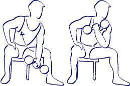
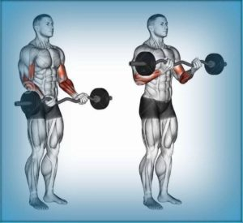

Ejercicios efectivos de bíceps
Homepage
Products
Services
Clients
Support
Welcome to Ejercicios efectivos de bíceps
Privacy policy
2021.06.26 19:47


Menu
Los 6 mejores ejercicios para bíceps - adidas Runtastic
4 ejercicios para unos bíceps más grandes - Entrenamiento .
Los 6 mejores ejercicios para desarrollar brazo: bíceps y tríceps
Los 7 ejercicios de bíceps más efectivos, según la ciencia .
Ejercicios de bíceps - Ejercicios de brazos para mujer
Bíceps grandes: 7 ejercicios básicos para tener unos brazos .
Top 10 ejercicios de bíceps para mujeres y hombres .
Los nueve mejores ejercicios para entrenar tus bíceps en el .
Fitness: 4 ejercicios básicos para tener unos bíceps de acero .
Ejercicios con mancuernas para fortalecer tus tríceps y bíceps .
Los 6 mejores ejercicios para bíceps - adidas Runtastic
4 ejercicios para unos bíceps más grandes - Entrenamiento .
Los 6 mejores ejercicios para desarrollar brazo: bíceps y tríceps
Los 7 ejercicios de bíceps más efectivos, según la ciencia .
Ejercicios de bíceps - Ejercicios de brazos para mujer
Bíceps grandes: 7 ejercicios básicos para tener unos brazos .
Top 10 ejercicios de bíceps para mujeres y hombres .
Los nueve mejores ejercicios para entrenar tus bíceps en el .
Fitness: 4 ejercicios básicos para tener unos bíceps de acero .
Ejercicios con mancuernas para fortalecer tus tríceps y bíceps .